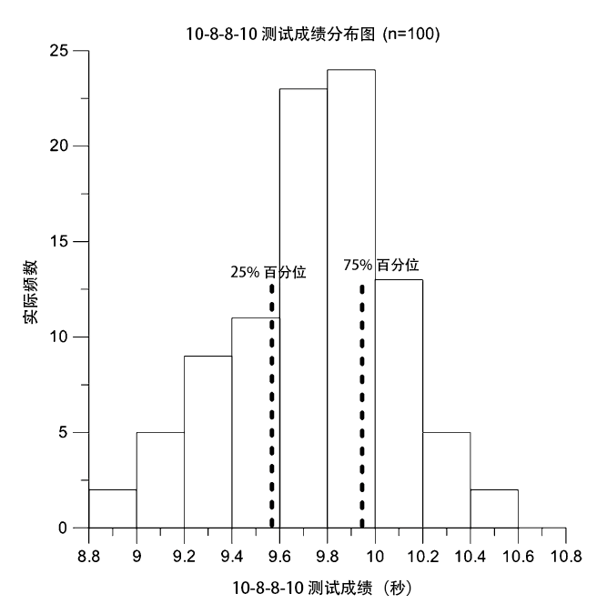

The ARsA-B were significantly older than ARLP (p < 0.0001; 95 CI% -4.10 to -2.10; ES = 1.25). There were no significant differences between the ARA-B and ARLP groups for the percentage of time spent training for endurance, sprint and agility, and repeated sprint ability during the pretest preparation phase (i.e., 6 weeks). The percentage of time spent training for endurance, sprint and agility, and repeated sprint ability was 68 ± 5.1 and 67 ± 6.8% (p = 0.34, 95% CI -0.78–1.78; ES = 0.17), 15 ± 4.6 and 14 ± 5.8% (p = 0.22, 95% CI -0.81–1.81; ES = 0.19), and 10 ± 4.3 and 9 ± 6.8% (p = 0.44, 95% CI -0.6 to 1.6; ES = 0.18) of the total training time for the ARA-B and ARLP groups, respectively. Percentage of time devoted to flexibility training was significantly higher in ARLP than in ARA-B (9 ± 1.8 and 7 ± 1.8 %, p = 0.04, 95% CI 1.3–2.7, ES = 0.32).
The mean best 10-8-8-10 test time for the ARA-B and ARLP was 9.61 ± 0.45 and 9.66 ± 0.41 seconds, respectively (p = 0.57; 95% CI -0.13 to 0.23; ES = 0.11; n = 100). The performance in the 10-8-8-10 test assumed as the mean of all trials was 9.81 ± 0.41 and 9.78 ± 0.41 seconds for ARA-B and ARLP, respectively (p = 0.72; 95% CI -0.21 to 0.14; ES =
0.07; n = 100).
Mean, median, and mode of the 10-8-8-10 test pooled data (i.e., ARA-B plus ARLP) were 9.74 ± 0.34 seconds (95% CI 9.67–9.81), 9.79 (95% CI 9.67–9.84), and 9.64 seconds for the mean of the 3 trials, respectively. The corresponding values for the 10-8-8-10 test best performance pooled data were 9.60 ± 0.36 (95% CI 9.52–9.67), 9.63 (95% CI 9.54–9.70), and 9.48 seconds.
Receiver operating characteristic analysis showed that
10-8-8-10 performance was insensitive in detecting competitive-level differences in this population of ARs as revealed by the area under the curve size (AUC = 0.49, p = 0.87; 95% CI 0.38–0.60; Figure 1).
Figure 1. Receiver operating characteristic (ROC) plot for the 10-8-8-10 test performance assuming competitive level as dichotomous variable (i.e., Serie A-B vs. Lega Pro; n = 50, respectively). Area under the curve (AUC = 0.49, p = 0.87; 95%CI 0.38–0.60). Black line = ROC curve.
The ICC for the 10-8-8-10 test was 0.90 (n = 64, p < 0.0001, 95% CI 0.84–0.93). The across trials TEM was of 0.21 (95% CI 0.18–0.24) and 0.18 seconds (95% CI 0.16–0.21) for trial 1 vs. 2 and trial 2 vs. 3, respectively.
The smallest worthwhile change for the 10-8-8-10 test (pooled data, n = 100) was of 0.07 seconds using either the mean or the best of the pooled (i.e., ARA-B and ARC) values.
The interquartile range values for the 10-8-8-10 scores were 9.57 seconds (95% CI 9.39–9.64) and 9.94 seconds (95% CI 9.85–10.09) for the 25 and 75% percentiles, respectively (Figure 2).

Figure 2. Distribution of 10-8-8-10 scores. Vertical black dotted lines represent the limit of the 25 and 75% percentiles.